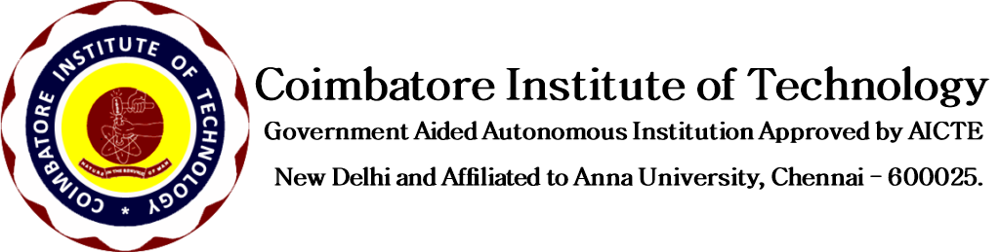
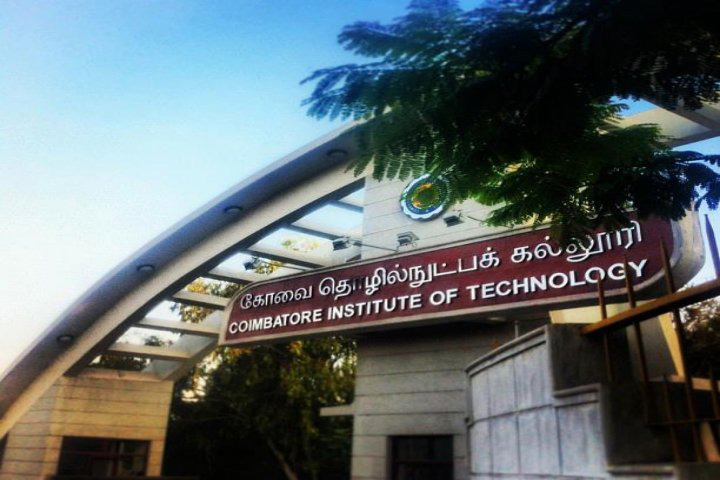
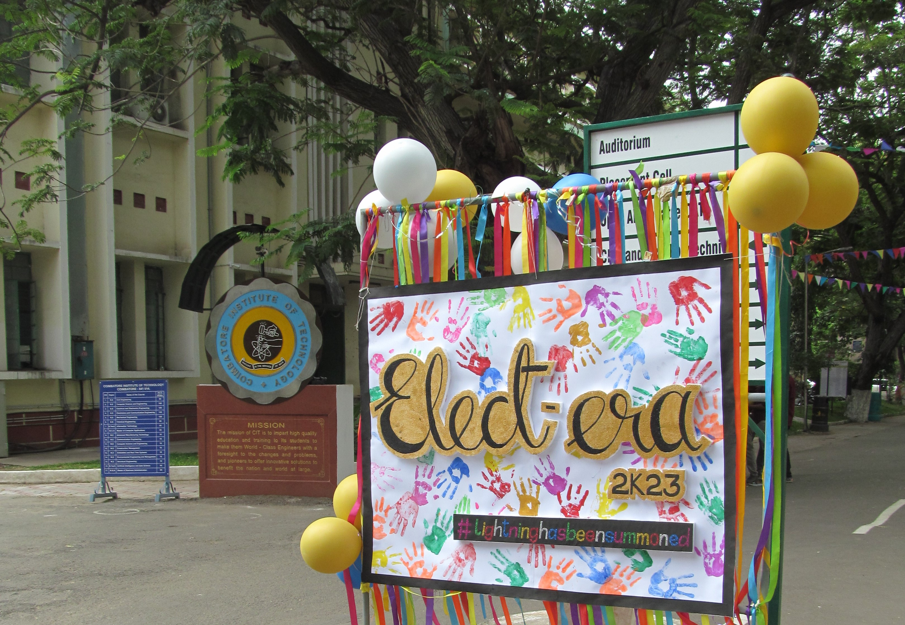
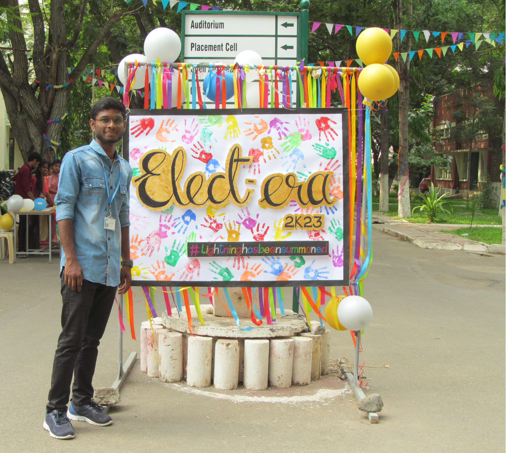

2023-2024 Admission cut off marks and rank
**webcast Live portal**
About us:
The V. Rangasamy Naidu Educational Trust devoted to the cause of promoting technical and scientific literacy, established Coimbatore Institute of Technology (CIT) in Coimbatore, Tamil Nadu, South India in 1956. CIT is one of the most reputed and prestigious educational institutions in India. The Institute backed by World Class research and development over the years attained autonomous status in 1987.
Our Vision:
The Institute strives to inculcate a sound knowledge in engineering along with realized social responsibilities to enable its students to combat the current and impending challenges faced by our country and to extend their expertise to the global arena.
Online Remote Learning
Lifetime Access For Learning
Our Mission
The mission of CIT is to "impart high quality education and training to its students to make them World-Class Engineers with a foresight to the changes and problems, and pioneers to offer innovative solutions to benefit the nation and the world at large".
Aiding Social Advance ments through Technologies
Up-to-Date Course Content
  
APR/MAY 2024- EXAMINATIONS(ARREAR & REGULAR) SCHEDULE FOR B.E/B.TECH(2020 BATCH STUDENTS)/M.SC., (2019 & 2020 BATCH STUDENTS)/M.C.A.(2021 & 2022 BATCHES)
Add:Civil Aerodrome Post, Coimbatore, Tamilnadu,
India - 641 014
Call:+91-422-2574071
Email:principal.citoffice@cit.edu.in
Coimbatore Institute Of Technology
manoj
1
2